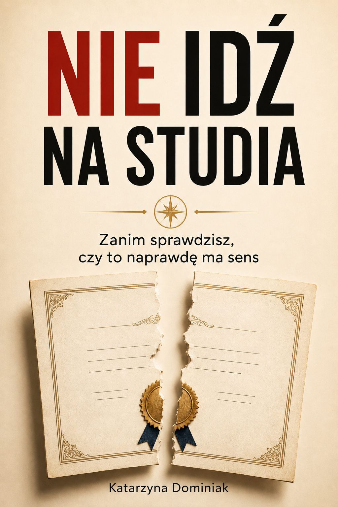

Książka w przedsprzedaży
Nie idź na studia tylko dlatego, że wszyscy mówią, że musisz.
Książka dla młodych ludzi i rodziców, którzy chcą podjąć świadomą decyzję, zanim oddadzą kilka lat życia, pieniądze i energię decyzji podjętej z presji — bez konkretnego planu.
To jest przedsprzedaż. Pełna wersja książki zostanie wysłana e-mailem po premierze. Przed zakupem możesz przeczytać fragment.

Problem
Problem nie zaczyna się na uczelni. Problem zaczyna się wtedy, gdy nikt nie zadaje właściwych pytań.
Wielu młodych ludzi idzie na studia nie dlatego, że mają jasny plan, ale dlatego, że tak trzeba. Bo rodzice mówią, że ze studiami będzie lepsza przyszłość. Bo szkoła pcha wszystkich w tym samym kierunku. Bo otoczenie traktuje studia jak oczywisty następny krok.
Tylko że kilka lat życia, duże pieniądze i dyplom nie zawsze dają praktyczne umiejętności, niezależność i realny plan na przyszłość. Jeżeli wpisujesz w wyszukiwarkę "nie wiem co studiować", "czy warto iść na studia" albo "studia czy praca", to nie potrzebujesz kolejnej obietnicy. Potrzebujesz pytań, które sprawdzą decyzję przed faktem.
Jeśli choć jedno z tych pytań jest Twoje, ta książka jest napisana właśnie po to, żeby zatrzymać Cię przed automatyczną decyzją.
- Nie wiesz, co studiować?
- Wybierasz kierunek, bo boisz się nie wybrać niczego?
- Czujesz presję, że bez studiów nie ma przyszłości?
- Zastanawiasz się, czy studia naprawdę są warte swojej ceny?
- Chcesz wiedzieć, co możesz zrobić zamiast iść na studia bez planu?
Dla kogo
Ta książka jest dla Ciebie, jeśli...
- kończysz szkołę i nie wiesz, czy iść na studia;
- jesteś rodzicem nastolatka i chcesz pomóc dziecku wybrać mądrze, a nie pod presją;
- pytasz: „co studiować?” albo „jakie studia wybrać?”, ale żadna odpowiedź Cię nie przekonuje;
- czujesz, że wszyscy oczekują od Ciebie jednej decyzji;
- szukasz alternatyw dla studiów i chcesz myśleć praktycznie;
- nie chcesz wybrać kierunku tylko z lęku, braku pomysłu albo dla świętego spokoju.
Obietnica
Co zmieni ta książka?
Ta książka nie wybierze za Ciebie drogi. Ale pomoże Ci przestać traktować studia jak domyślną odpowiedź na brak planu.
W środku
W książce znajdziesz między innymi:
- Dlaczego „idź na studia, bo wszyscy idą” jest niebezpieczne.
- Kiedy studia mogą być stratą czasu, pieniędzy i odwagi.
- Kiedy studia naprawdę mają sens — i jak to rozpoznać.
- Teoria kontra praktyczne umiejętności, których oczekuje życie.
- Ukryty koszt „darmowej” edukacji.
- Alternatywy dla studiów: praca, doświadczenie, rzemiosło, kursy, własny projekt.
- Jak sprawdzić, czy wybrany kierunek ma realną wartość.
- Jak budować umiejętności, niezależność i plan przed wejściem w system.
Fragment
Przeczytaj fragment przed zakupem
Zanim kupisz książkę w przedsprzedaży, możesz sprawdzić jej ton, styl i sposób myślenia. To nie jest akademicki poradnik. To bezpośrednia, praktyczna i momentami niewygodna książka o decyzji, która może wpłynąć na kilka lat życia.
„Jeżeli nie wiesz, po co idziesz na studia, bardzo możliwe, że idziesz tam po cudzy spokój — a nie po własną przyszłość.”
Oferta
Zamów książkę w przedsprzedaży
Kupując teraz, otrzymujesz potwierdzenie zamówienia i dostępny fragment. Pełna wersja książki zostanie wysłana e-mailem po premierze.
Cena przedsprzedażowa obowiązuje tylko do dnia premiery.
- Format:
- ebook PDF / EPUB
- Dostawa:
- e-mail + link do pobrania przez Payhip
- Płatność:
- obsługiwana bezpiecznie przez Payhip
Jak działa przedsprzedaż?
- Zamawiasz książkę w cenie przedsprzedażowej.
- Otrzymujesz potwierdzenie i dostępny fragment.
- Po premierze dostajesz pełną wersję e-mailem.
To jest przedsprzedaż. Finalny plik zostanie dostarczony po premierze. Jeśli data premiery się zmieni, kupujący zostaną poinformowani e-mailem.
Zamów w przedsprzedażyPo zakupie otrzymasz wiadomość e-mail z potwierdzeniem. Pełna książka zostanie dostarczona po publikacji.
Bonus
Checklista: Czy studia naprawdę mają sens w mojej sytuacji?
Osoby kupujące książkę w przedsprzedaży otrzymają dodatkową checklistę z pytaniami, które warto zadać przed wyborem kierunku studiów. To proste narzędzie pomaga spojrzeć na studia jak na realną inwestycję czasu, pieniędzy i energii.
Bonus pomoże Ci przejść od ogólnego lęku do konkretnych pytań. Zamiast pytać tylko „jakie studia wybrać?”, zaczniesz pytać: „po co, za ile, z jakim efektem i jaką alternatywą?”.
- Czy wiem, po co chcę iść na ten kierunek?
- Jakie konkretne umiejętności zdobędę?
- Ile to będzie kosztować — także w czasie i utraconych możliwościach?
- Co mogę zbudować w tym samym czasie?
- Czy wybieram tę drogę z przekonania, czy z presji?
FAQ
Najczęstsze pytania
Pełna wersja książki zostanie wysłana e-mailem po premierze: [DATA PREMIERY]. Jeśli termin się zmieni, kupujący zostaną poinformowani e-mailem.
Po zakupie otrzymasz potwierdzenie zamówienia oraz dostęp do dostępnego fragmentu lub plik potwierdzający przedsprzedaż. Pełna wersja zostanie dostarczona po premierze.
Planowany format to ebook PDF. Możliwy jest również format EPUB — do potwierdzenia przed premierą.
Nie. To książka przeciwko automatycznej decyzji, presji i wierze, że dyplom sam w sobie rozwiązuje problem przyszłości. Edukacja ma sens wtedy, gdy prowadzi do konkretnego celu, umiejętności i planu.
Dla jednych i drugich. Młodym pomaga zadać właściwe pytania przed wyborem kierunku. Rodzicom pomaga spojrzeć na studia nie tylko przez prestiż i bezpieczeństwo, ale też przez koszt, czas i praktyczne efekty.
Tak. Po zakupie możesz przekazać książkę osobie, dla której ją kupujesz, zgodnie z zasadami sprzedaży i licencją opisanymi w regulaminie.
Tak, jeśli sprzedaż będzie prowadzona przez firmę. Szczegóły faktury zostaną opisane przy płatności lub w wiadomości po zakupie. TODO: uzupełnić dane sprzedawcy i procedurę faktur.
Zasady zwrotów są opisane w polityce zwrotów. Ponieważ jest to produkt cyfrowy w przedsprzedaży, warunki powinny być jasno widoczne przed zakupem. TODO: potwierdzić finalną politykę zwrotów przed publikacją.
Kupujący zostaną poinformowani e-mailem o zmianie terminu. Jeśli zmiana będzie istotna, zastosowanie będą miały zasady opisane w polityce zwrotów.
Zanim wybierzesz studia, zatrzymaj się i sprawdź, czy to naprawdę Twoja droga.
Kilka lat życia to zbyt dużo, żeby oddać je przypadkowi, presji albo obietnicy, której nikt później nie rozliczy.
Zamów w przedsprzedaży